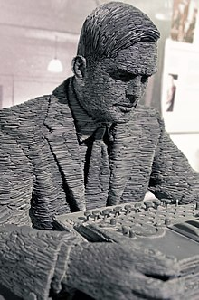
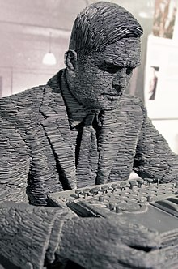
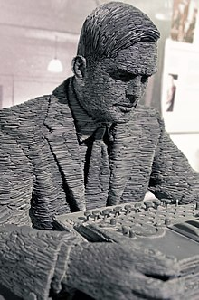
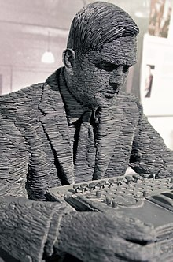

Turing was born in Maida Vale, London, while his father, Julius Mathison Turing (1873–1947), was on leave from his position with the Indian Civil Service (ICS) at Chhatrapur, Bihar and Orissa Province, in British India. Turing's father was the son of a clergyman, the Rev. John Robert Turing, from a Scottish family of merchants that had been based in the Netherlands and included a baronet. Turing's mother, Julius' wife, was Ethel Sara Turing (née Stoney 1881–1976),daughter of Edward Waller Stoney, chief engineer of the Madras Railways. The Stoneys were a Protestant Anglo-Irish gentry family from both County Tipperary and County Longford, while Ethel herself had spent much of her childhood in County Clare. Julius' work with the ICS brought the family to British India, where his grandfather had been a general in the Bengal Army. However, both Julius and Ethel wanted their children to be brought up in Britain, so they moved to Maida Vale, London, where Alan Turing was born on 23 June 1912, as recorded by a blue plaque on the outside of the house of his birth, later the Colonnade Hotel. Turing had an elder brother, John (the father of Sir John Dermot Turing, 12th Baronet of the Turing baronets). Turing's father's civil service commission was still active and during Turing's childhood years Turing's parents travelled between Hastings in England[28] and India, leaving their two sons to stay with a retired Army couple. At Hastings, Turing stayed at Baston Lodge, Upper Maze Hill, St Leonards-on-Sea, now marked with a blue plaque. The plaque was unveiled on 23 June 2012, the centenary of Turing's birth. Very early in life, Turing showed signs of the genius that he was later to display prominently. His parents purchased a house in Guildford in 1927, and Turing lived there during school holidays. The location is also marked with a blue plaque.
Turing's parents enrolled him at St Michael's, a day school at 20 Charles Road, St Leonards-on-Sea, at the age of six. The headmistress recognised his talent early on, as did many of his subsequent teachers. Between January 1922 and 1926, Turing was educated at Hazelhurst Preparatory School, an independent school in the village of Frant in Sussex (now East Sussex).[33] In 1926, at the age of 13, he went on to Sherborne School, a boarding independent school in the market town of Sherborne in Dorset. The first day of term coincided with the 1926 General Strike in Britain, but he was so determined to attend, that he rode his bicycle unaccompanied 60 miles (97 km) from Southampton to Sherborne, stopping overnight at an inn.[34] Turing's natural inclination towards mathematics and science did not earn him respect from some of the teachers at Sherborne, whose definition of education placed more emphasis on the classics. His headmaster wrote to his parents: "I hope he will not fall between two stools. If he is to stay at public school, he must aim at becoming educated. If he is to be solely a Scientific Specialist, he is wasting his time at a public school".[35] Despite this, Turing continued to show remarkable ability in the studies he loved, solving advanced problems in 1927 without having studied even elementary calculus. In 1928, aged 16, Turing encountered Albert Einstein's work; not only did he grasp it, but it is possible that he managed to deduce Einstein's questioning of Newton's laws of motion from a text in which this was never made explicit.
When Turing returned to Cambridge, he attended lectures given in 1939 by Ludwig Wittgenstein about the foundations of mathematics.[54] The lectures have been reconstructed verbatim, including interjections from Turing and other students, from students' notes.[55] Turing and Wittgenstein argued and disagreed, with Turing defending formalism and Wittgenstein propounding his view that mathematics does not discover any absolute truths, but rather invents them
In 1941, Turing proposed marriage to Hut 8 colleague Joan Clarke, a fellow mathematician and cryptanalyst, but their engagement was short-lived. After admitting his homosexuality to his fiancée, who was reportedly "unfazed" by the revelation, Turing decided that he could not go through with the marriage.[121] Death On 8 June 1954, Turing's housekeeper found him dead. He had died the previous day. A post-mortem examination established that the cause of death was cyanide poisoning.[131] When his body was discovered, an apple lay half-eaten beside his bed, and although the apple was not tested for cyanide,[132] it was speculated that this was the means by which a fatal dose was consumed. An inquest determined that he had committed suicide, and he was cremated at Woking Crematorium on 12 June 1954.[133] Turing's ashes were scattered there, just as his father's had been. Andrew Hodges and another biographer, David Leavitt, have both suggested that Turing was re-enacting a scene from the Walt Disney film Snow White and the Seven Dwarfs (1937), his favourite fairy tale, both noting that (in Leavitt's words) he took "an especially keen pleasure in the scene where the Wicked Queen immerses her apple in the poisonous brew."[134] Philosophy professor Jack Copeland has questioned various aspects of the coroner's historical verdict. He suggests an alternative explanation for the cause of Turing's death, this being the accidental inhalation of cyanide fumes from an apparatus for electroplating gold onto spoons, which uses potassium cyanide to dissolve the gold. Turing had such an apparatus set up in his tiny spare room. Copeland notes that the autopsy findings were more consistent with inhalation than with ingestion of the poison. Turing also habitually ate an apple before bed, and it was not unusual for it to be discarded half-eaten.[135] In addition, Turing had reportedly borne his legal setbacks and hormone treatment (which had been discontinued a year previously) "with good humour" and had shown no sign of despondency prior to his death, even setting down a list of tasks he intended to complete upon return to his office after the holiday weekend.[135] Turing's mother believed that the ingestion was accidental, resulting from her son's careless storage of laboratory chemicals.[136] Biographer Andrew Hodges suggests Turing arranged the delivery of the equipment to deliberately allow his mother plausible deniability regarding any suicide claims.[137]